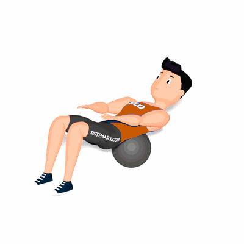

Mobilidade Torácica no Medicine Ball

O exercício tem como objetivo de alongar e melhorar a mobilidade do tórax, que auxilia na realização de atividades físicas.
Ficha Técnica
Tipo: Mobilidade
Grupo Muscular: Costas
Aparelho: Nenhum
Músculos: Nenhum
Como realizar
- Deite-se de barriga para cima e apoie as costas sobre um Medicine Ball;
- Com os braços estendidos sobre a perna, realize uma extensão da coluna levando os braços para trás da cabeça;
- Retorne a posição inicial lentamente e repita os movimentos.
 RC STORE
RC STORE